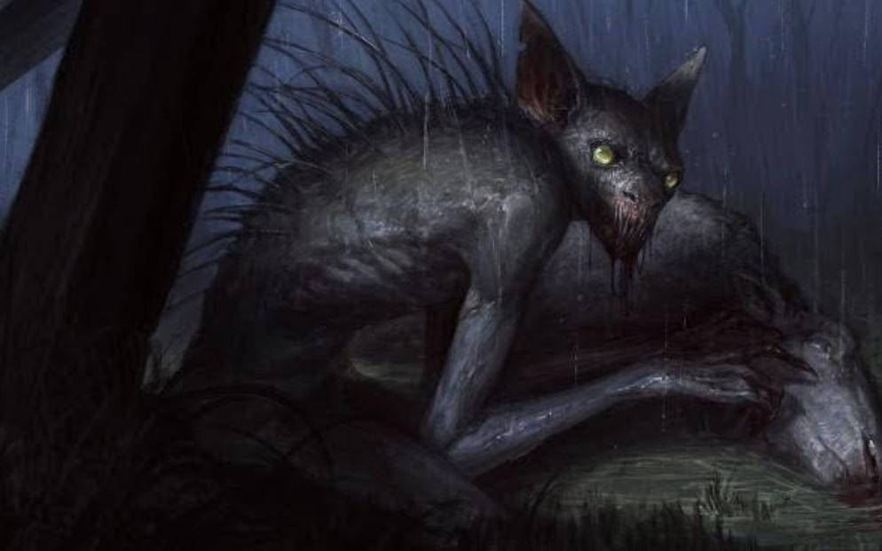

Lendas urbanas são narrativas misteriosas por vezes macabras, que circulam entre as pessoas, contadas de boca em boca adaptando-se ao tempo, ao lugare aos medos de cada geração. Diferente dos mitos ancestrais, essas histórias têm um pé no cotidiano como se pudessem acontecer com qualquer um.
Dizem que, em uma antiga escola, existia o espírito de uma jovem loira que aparecia no banheiro feminino. Ninguém sabia ao certo quem ela tinha sido. Alguns diziam que era uma estudante que havia morrido tragicamente; outros afirmavam que era uma moça que sofrera um acidente muitos anos antes, O que todos tinham em comum era o medo de encontá-la.Continue lendo
Já era quase noite no sítio do Seu Lobo. Estava frio, então ele, sua mulher e seus três filhos entraram para se aquecer. Parecia prudente ficar em casa mesmo. Afinal, por aquelas bandas, circulava uma história muito estranha,dessas de arrepiar os cabelos. Continue lendo
